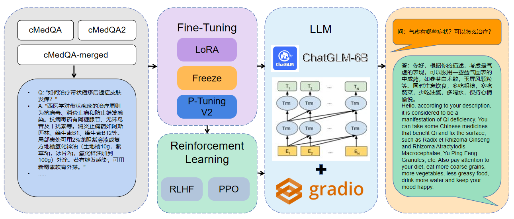

Recently, large-scale language models (LLMs) such as ChatGPT have shown significant success in following instructions and producing human-like responses in general domains. However, such language models have yet to adapt to the medical domain, resulting in poor accuracy of responses and an inability to provide reasonable advice regarding medical diagnosis and medication. To address this issue, we fine-tuned our MedQA-ChatGLM model based on 300,000 real-world patient-doctor dialogues from an online medical consulting website. By fine-tuning the LLM with these 300,000 dialogues, our model demonstrated significant improvements in understanding patients' needs and providing informed advice.
It is worth noting that the MedQA-ChatGLM model was fine-tuned based on the ChatGLM-6B, and our fine-tuning methods included LoRA, Freeze, P-Tuning V2. Additionally, MedQA-ChatGLM also supports RL and RLHF methods, which are techniques that combine reinforcement learning with human feedback, where human preferences are used as reward signals to guide the model in generating high-quality language outputs. Through the use of a diverse set of feedback providers, RLHF helps the model learn to generate text that represents different perspectives, making it more versatile and useful in a variety of contexts.
MedQA-ChatGLM incorporates two major datasets of real patient and doctor conversations and is efficiently fine-tuned using LoRA, Freeze, and P-Tuning V2. The introduction of RL and RLHF methods allows the model to be fully fitted for performance in communication with humans. An online usage page was constructed using Gradio to make it accessible to all.
Many medical data have been collected for training LLMs, such as ChatDoctor which uses 110k dialogues between patients and doctors from two real scenarios, as well as 5k fake dialogues generated by ChatGPT for model training. Huatuo-Llama-Med-Chinese uses medical knowledge base and ChatGPT to generate dialogue data from 8k patients and doctors. It is worth mentioning that they have improved the precision of the model by introducing the medical knowledge base. MedicalGPT-zh uses 52k dialogues between patients and doctors from real scenarios, as well as 130k dialogues with explanatory answers for medical questions, for model training. DoctorGLM shares a dataset of Q&A dialogues for specific medical conditions, and incorporates more open medical datasets for fine-tuning the model. These works have left a deep impression on us, but issues of fake medical dialogues and limited data volume still pose challenges for effective LLMs fine-tuning. cMedQA2 and cMedQA are dedicated medical Q&A datasets for the Chinese community. The integration of cMedQA and cMedQA2 can provide sufficient real-world medical dialogues for LLMs training, and these dialogues will serve the Chinese medical field well. Table shows some overview of the cMedQA and cMedQA2 dataset.
| DataSet | #Ques | #Ans | Ave. #words per Question | Ave. #words per Answer | Ave. #characters per Question | Ave. #characters per Answer |
|---|---|---|---|---|---|---|
| cMedQA | 101,743 | 101,743 | 96 | 169 | 119 | 212 |
| cMedQA2 | 108,000 | 203,569 | - | - | 49 | 101 |
| cMedQA-merged | - | 305,312 | - | - | - | - |
This work has been helped in many ways and we are truly grateful to them.
ZhangSheng provides a very rich and realistic dataset of conversations between Chinese patients and doctors.
ChatGLM-Efficient-Tuning provides a very rich set of training methods for fine-tuning ChatGLM-based models, such as Freeze, LoRA, P-Tuning V2 and RLHF, which helped us to build the training code quickly.
Nerfies has shared the implementation of the project page to help showcase our own latest work.
Gradio helped us to quickly build a MedQA-ChatGLM interface that can be used online.
Google Colab supports everyone to use MedQA-ChatGLM in their own space without the need to purchase a high performance GPU service.
HuggingFace provides us with a place to store and share data and model checkpoints.
The fine-tuning training and testing for this work was done on four graphics cards, A100 80GB, and we thank the contributors of the resources.
@software{2023MedQA-ChatGLM,
author = {Rongsheng Wang, Yaofei Duan, Junrong Li, Tao Tan},
license = {CC BY-NC-SA 4.0},
title = {{MedQA-ChatGLM}},
url = {https://github.com/WangRongsheng/MedQA-ChatGLM}
}